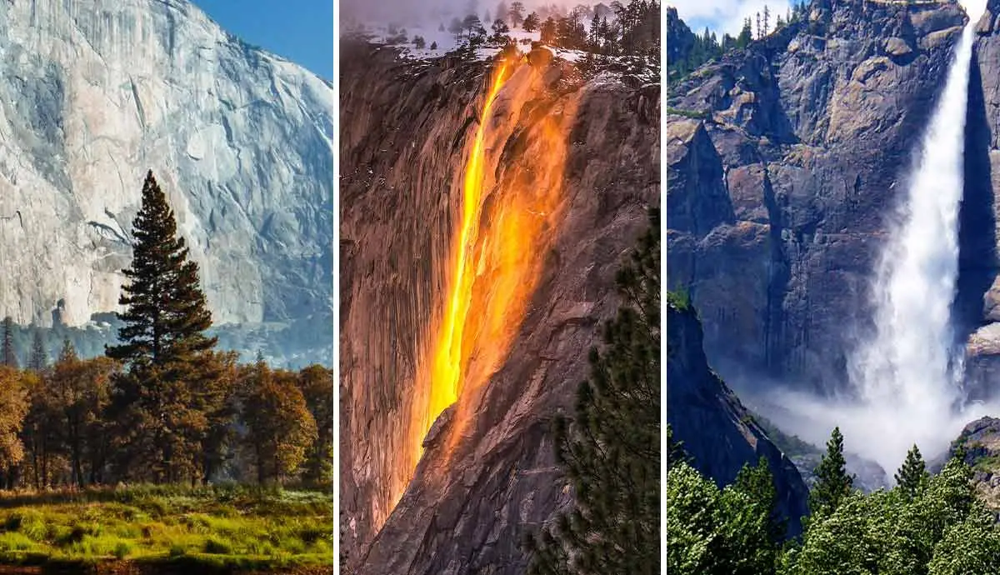

Yosemite National Park

Description: Yosemite National Park, renowned for its breathtaking landscapes, is a paradise for climbers. Home to the iconic El Capitan, it offers some of the most challenging and awe-inspiring climbing routes in the world.
Location: California, USA
View on Map
Chengdu Research Base of Giant Panda Breeding
Description: Dedicated to panda conservation, the Chengdu Panda Base is home to over 100 giant pandas. It aims to imitate the natural habitat of pandas to ensure their well-being and reproduction.
Location: Chengdu, Sichuan, China
View on Map